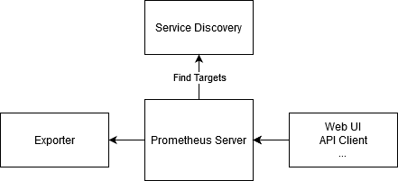
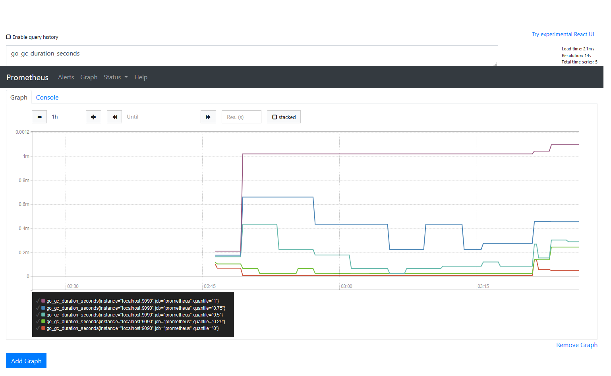
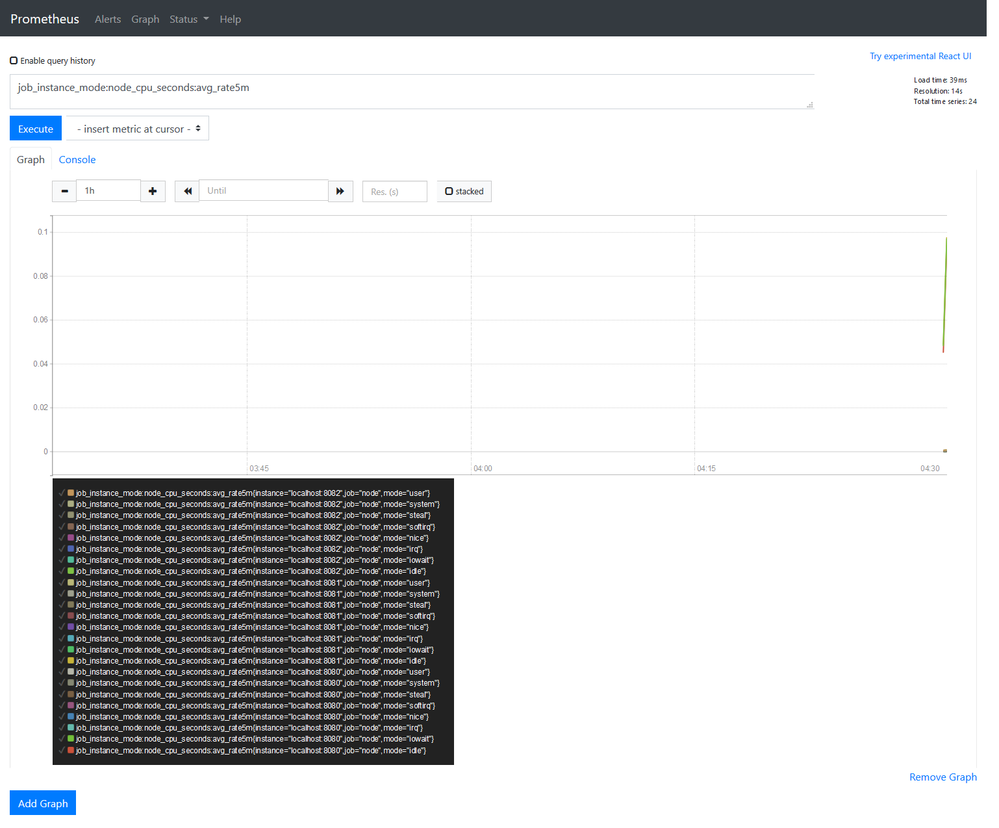
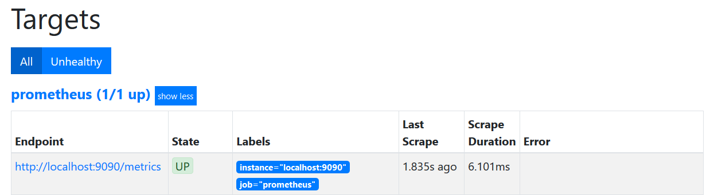
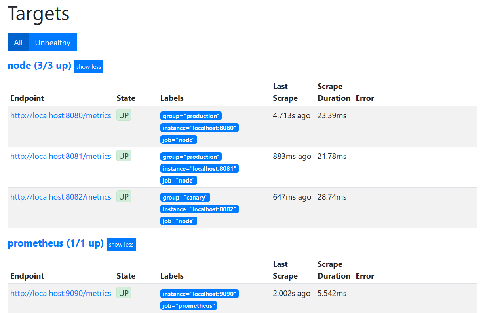

Prometheus是最近非常流行的Pull-based monitoring，主要的角色是以下兩者：
為了往後學習方便，先來實作一遍這個方便利用的工具
Prometheus的基礎運用架構很單純，大在就像下圖： 
從圖中可見，Prometheus收集時間序列資料(metrics)都是由自己主動向Exporter發起的，這次大概會做這些：
部屬Prometheus非常簡單，就只是binary配上一個設定檔，指令如下：
$ wget https://github.com/prometheus/prometheus/releases/download/v2.20.1/prometheus-2.20.1.linux-amd64.tar.gz
$ tar zxvf prometheus-2.20.1.linux-amd64.tar.gz
$ cd prometheus-2.20.1.linux-amd64
|
|
$ ./prometheus --config.file=prometheus.yml
使用cURL測試一下metrics
$ curl localhost:9090/metrics
# HELP go_gc_duration_seconds A summary of the pause duration of garbage collection cycles.
# TYPE go_gc_duration_seconds summary
go_gc_duration_seconds{quantile="0"} 8.412e-06
go_gc_duration_seconds{quantile="0.25"} 6.8151e-05
go_gc_duration_seconds{quantile="0.5"} 0.000435588
go_gc_duration_seconds{quantile="0.75"} 0.000661594
go_gc_duration_seconds{quantile="1"} 0.001019489
go_gc_duration_seconds_sum 0.002193234
go_gc_duration_seconds_count 5
# HELP go_goroutines Number of goroutines that currently exist.
# TYPE go_goroutines gauge
...
就算加上下載，整個過程也不到五分鐘…
拿到metrics就是這麼快速，也能進web看看graph，在瀏覽器打上http://prometheus_ip:9090/graph就能看到了， tab選擇graph也能看到些簡單的圖表 
既然Prometheus已經起來了，那麼來試著監控些什麼，就下載個node exporter來測試
wget https://github.com/prometheus/node_exporter/releases/download/v1.0.1/node_exporter-1.0.1.linux-amd64.tar.gz
tar zxvf node_exporter-1.0.1.linux-amd64.tar.gz
cd node_exporter-1.0.1.linux-amd64
裡面一樣是個binary file，執行下去
./node_exporter --web.listen-address 127.0.0.1:8080
curl 127.0.0.1:8080/metrics
# HELP go_gc_duration_seconds A summary of the pause duration of garbage collection cycles.
# TYPE go_gc_duration_seconds summary
go_gc_duration_seconds{quantile="0"} 0
go_gc_duration_seconds{quantile="0.25"} 0
go_gc_duration_seconds{quantile="0.5"} 0
go_gc_duration_seconds{quantile="0.75"} 0
go_gc_duration_seconds{quantile="1"} 0
go_gc_duration_seconds_sum 0
go_gc_duration_seconds_count 0
cURL測試metrics
$ curl localhost:8080/metrics
# HELP go_gc_duration_seconds A summary of the pause duration of garbage collection cycles.
# TYPE go_gc_duration_seconds summary
go_gc_duration_seconds{quantile="0"} 9.31e-06
go_gc_duration_seconds{quantile="0.25"} 5.488e-05
go_gc_duration_seconds{quantile="0.5"} 0.000112915
go_gc_duration_seconds{quantile="0.75"} 0.000194093
go_gc_duration_seconds{quantile="1"} 0.004481425
go_gc_duration_seconds_sum 0.175059981
go_gc_duration_seconds_count 957
# HELP go_goroutines Number of goroutines that currently exist.
# TYPE go_goroutines gauge
go_goroutines 8
# HELP go_info Information about the Go environment.
# TYPE go_info gauge
...
一樣簡單快速
既然exporter沒問題，那麼是時候建立一個job來get metrics了，就依照這裡的範例，一步步操作吧
依照範例，建立prometheus.rules.yml，用於依照需求控制紀錄的方式，能降低監控造成的負擔，此範例是記錄下五分鐘平均的cpu狀態
|
|
然後修改prometheus.yml，除了增加rule，也新增job，並之前啟動的exporter
|
|
重新啟動prometheus後，就能用去query job instance了

在實務上，不可能每增加個exporter就重新啟動一次，這時候file-based service discovery就很重要，
這種方式和static config不同，只要修改檔案讓prometheus能去讀取就行，不需要reload
先在目錄中建立一個空的file_sd.yml，並修改prometheus.yml
|
|
重新啟動prometheus後，就發現targets回到空空如也的狀態了

接下來就是要用file來增加targets了，把前版的prometheus.yml中的static config放到file_sd.yml
|
|
接下來不需要重新啟動prometheus，也能新增targets了 